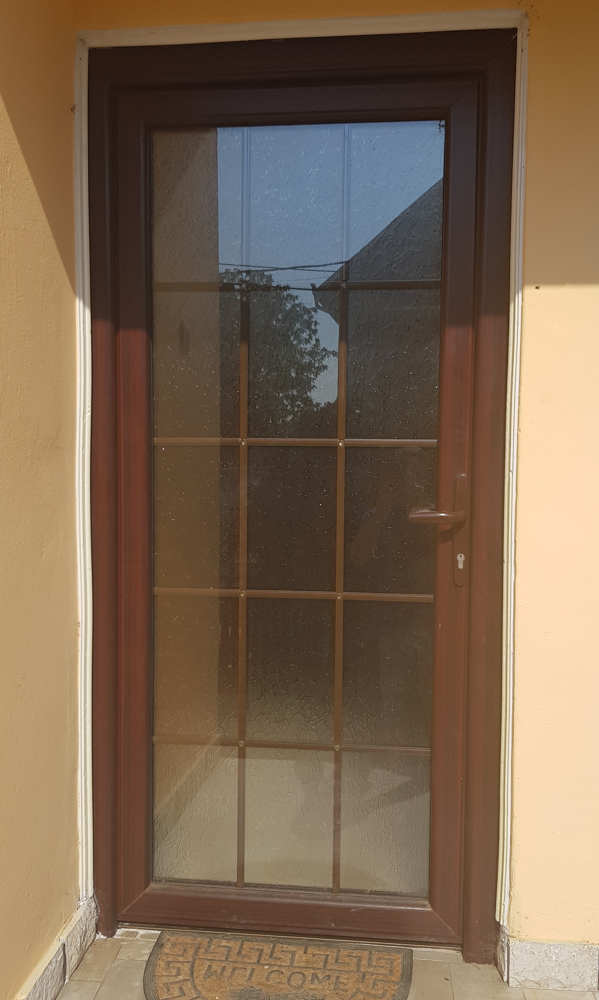
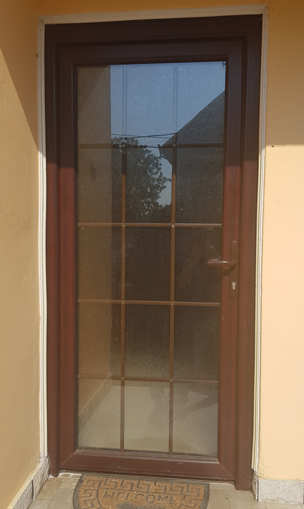

Ulazna vrata
Aluminijumska vrata
Karakteriše ih moderan dizajn i mogućnost izrade prema zahtevima kupca. Paneli mogu biti dekorativni ili sa inoks aplikacijom.
Pregradna vrata sa staklom su odličan izbor ukoliko želite prostoriju obasjanu prirodnim svetlom.
ALU vrata sa panelom od medijapana (MDF) su odlično rešenje za unutrašnje prostorije.
Nudimo mogućnost izrade sa termo prekidom.
Opredelite se za najmoderniji dizajn u boji sa RAL karte koja se najbolje uklapa u Vaš prostor.
Za dodatnu zaštitu, nudimo originalne američke komarnike, koji imaju zasebno krilo ili okvir.
novo u ponudi - vrata sa skrivenim krilom
Za razliku od klasičnih vrata, vrata sa skrivenim krilom
izgledaju kao jedna celina jer se okvir krila ne vidi, pa samim tim izgledaju veća i bolje se uklapaju u dizajn Vašeg doma. Manje su podložna prljanju što olakšava čišćenje i povećava njihovu dugotrajnost.


PVC vrata
Izrađena od 6k profila, naša PVC vrata su kvalitetna, dugotrajna i moderna. Koristimo 3D šarke kako bismo bolje osigurali vrata. Osim standardnih oblika, nudimo i vrata lučnog oblika. Kao i aluminijumska, PVC vrata mogu biti sa dekorativnim panelima ili pregradna sa staklom. Kako bi se vrata savršeno uklopila u enterijer Vašeg doma, opredelite se za vrata u dekoru drveta ili antracita sa spoljašnje, a beloj boji sa unutrašnje strane. Za maksimalnu bezbednost, mogućnost izrade vrata sa podiznom bravom sa 4 tačke zaključavanja.
 
